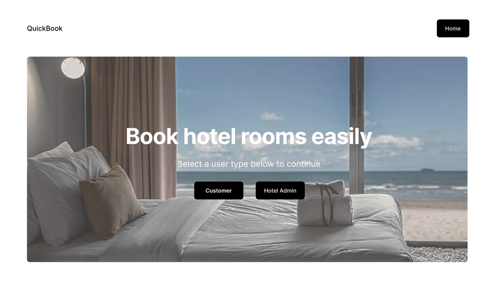
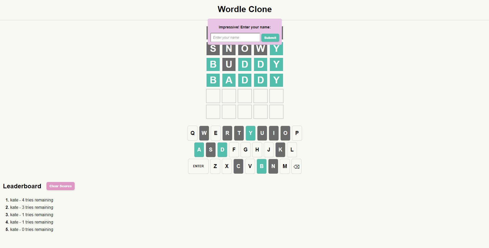
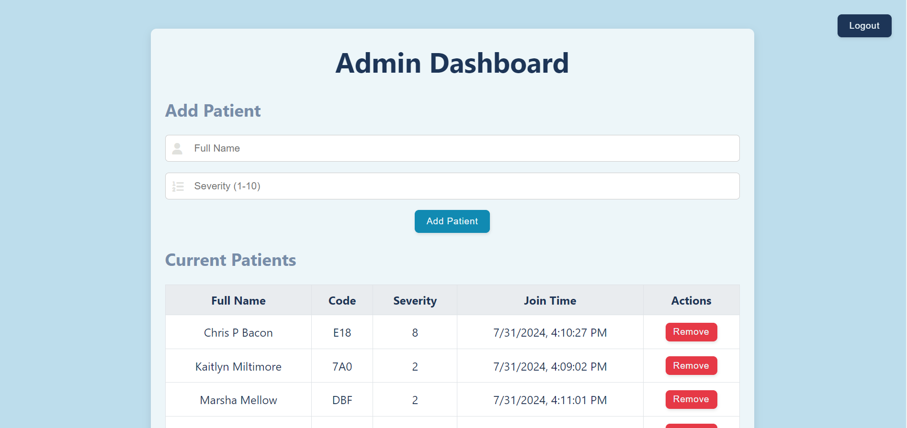

KAITLYN MILTIMORE
Hello!
I am a student at the University of Ottawa studying Computer Science and
Biochemistry. I am interested in data science, UI design, and front-end development!
Ottawa, ON
Mobile:
(123)456-7890
(123)456-7890

Personal:
email@email.com
email@email.com
GitHub:
katemilt
katemilt
WORK EXPERIENCE
Canadian Food Inspection Agency
Junior Field Crops Officer, Sep 2021 - Aug 2022
- Entered registration information into database to maintain an up-to-date record of all current and past applications
- Corresponded with clients via email or call to discuss their applications
- Upheld company standards by ensuring timely completion of tasks
- Reviewed applications for validity and adherence to policies
Faculty of Medicine at the University of Ottawa
Chemical Inventory Organizer, May 2021 - Aug 2021
- Maintained a neat chemical inventory database for various labs within the university by implementing systematic updates and removal of outdated entries
- Managed accurate labeling and organization of hazardous chemicals in labs to ensure compliance with safety regulations and to facilitate quick and precise identification
- Utilized Microsoft Excel to plan and document progress with team members
EDUCATION
University of Ottawa
Honours BSc with Double Major in Computer Science & Biochemistry
Expected graduation: Fall 2024
Expected graduation: Fall 2024
SKILLS
Programming: Java, C/C++, Python, SQL, HTML/CSS, JavaScript, Scheme, Go, Prolog
Tools: Jupyter Notebooks, Eclipse, Visual Studio, Git, PostgreSQL, AWS, Power BI, Android Studio
Tools: Jupyter Notebooks, Eclipse, Visual Studio, Git, PostgreSQL, AWS, Power BI, Android Studio

PROJECTS
Hotel Booking System Web App
Personal Project, Jan 2024 - Apr 2024
- Designed and developed a relational database using PostgreSQL to efficiently store and manage data related to hotels, rooms, customers, employees, and booking information
- Built an intuitive web application using the PERN stack (PostgreSQL, Express, React, Node), enabling users to search for available rooms based on criteria such as dates, capacity, area, hotel chain, and price
- Developed RESTful API endpoints with Express.js to handle CRUD operations

Wordle Game Clone
Personal Project, June 2024
- Created a clone of the popular NY Times Wordle game using HTML, CSS, and JavaScript to recreate the functionality and UI of the game
- Utilized a PHP server and AJAX calls to seamlessly submit scores and update the leaderboard, ensuring that the top scores are displayed and updated in real-time
- Documented the design process and decisions like colour palette and font theme through images

Hospital Triage Application
Personal Project, July 2024
- Developed an Emergency Waitlist web application using the PERN stack (PostgreSQL, Express, React, Node.js) to efficiently manage patient triage based on injury severity and wait time
- Implemented an intuitive user interface with React, allowing administrators to view and manage the patient list while providing patients with real-time updates on their queue position and estimated wait time
- Utilized Node.js and Express to create the backend, incorporating secure authentication and CRUD operations for patient data stored in a PostgreSQL database
